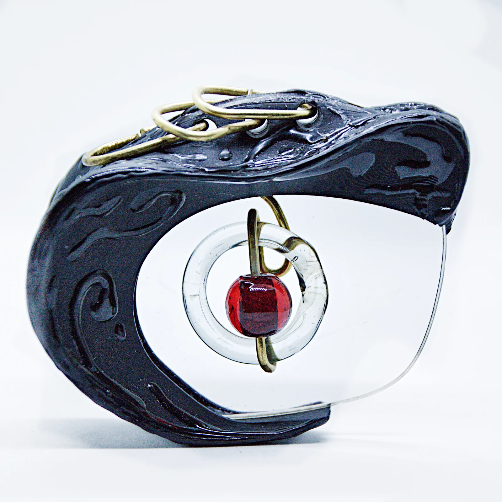
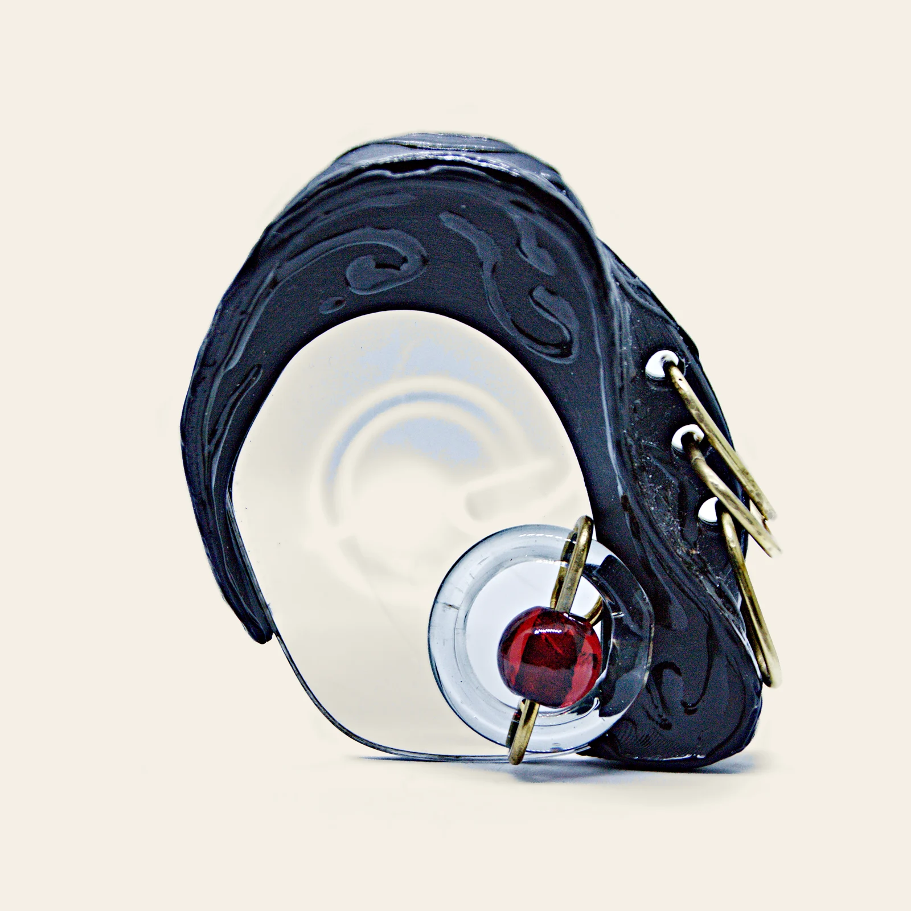

Livistone · 4 October 2026 · actual building renders
Eyelense E · through the red bead
Glossy black source crescent, brass threading, a rounded red bead with a 4.2 m-wide and 4.4 m-high open tunnel, a curved lens that clears at night, and a level limestone meadow forecourt. The physical Eyelense jewellery remains in Future House.
Desktop · day
Desktop · night
Touch · day
Software · day
Source photographs
The optimized mesh keeps the crescent and holes. The architecture adds raised black relief, separate brass fittings, a bounded lens, and the bead's continuous open tunnel. These source photographs and generated E artwork are references, separate from the implemented captures above.

Original catalogue photograph · front
Original catalogue photograph · sideTouch captures are browser emulation; SwiftShader is a software renderer. These are visual and collision checks, not physical-phone performance measurements.